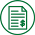

Wells Fargo, HBC’s 401(k) administrator, recommends Eight “Rules of Thumb” to maintain your financial health. Below is their set of easy-to-follow guidelines, along with simple steps on how to get started on your journey to better financial health. And, for more financial information and guidance…
Attend A Webinar!
Wells Fargo offers wellness webinars on financial topics at https://www.wellsfargo.com/retirement-plan/.
Visit
www.liveandworkwell.com, HBC’s EAP, log in using code “HBC”, and click on the “Financial & Legal” drop down menu. LiveandWorkWell provides additional resources for you to improve your financial health.
At the end of each of the following “Rule of Thumb” sections is a link with further information. Click to be directed to the Wells Fargo website.
1. Pay yourself first
Prioritize savings to help you get ahead
Why it’s important
If you deposit or move money into your savings account every time you get paid, you may be less likely to spend it on your everyday expenses. This practice can help you foster a habit of saving that will add up over time and help you be prepared for large or unexpected expenses.
A good target is to save 5 – 10% of your take-home pay and put it toward your savings goals. Saving even $25 or $50 a month is one small step you can take to help you get into the habit.
By paying yourself first, you make saving a top priority.
Start turning savings into a habit
2. Track your spending
Make sure you know where your money is going every month.
Why it’s important
If you’re trying to get your finances on track, a good first step is to know how you’re spending your money. Here are 3 steps to help you maximize every dollar you earn:
- Find out where your money is going. Add up your monthly bills, such as your mortgage or rent, insurance, utilities and phone. Then, track your personal expenses, such as groceries, gas, clothes, even coffee and snacks.
- Put your money where it matters most. Ensure you have enough money to cover your needs first, like paying your bills, paying down debt, and adding money to savings.
- Review your needs. As you review your expenses, consider whether an expense is something you need or something you want. This step will help you find areas to reduce your spending and find ways to save. If you find you don’t have enough money to cover your spending and allow for savings each month, think about ways to reduce your spending on the things you don’t need.
Start tracking everyday expenses
3. Create a safety net
Save for the unexpected with a savings fund
Why it’s important
An emergency savings fund is a separate account you can use to cover expenses during an unforeseen event, like an illness, losing a job, or even a major car repair. Having money at your fingertips can take some of the financial sting out of dealing with unforeseen events – and could also help you avoid taking on extra debt.
A good goal is to put away at least 3 – 6 months’ worth of living expenses. That might seem like a big amount at first, but the idea is to put a small amount away each week or two to build up to that goal.
Placing your emergency savings in an interest-earning bank account — such as a money market or interest-earning savings account — can give you easy access to your money when you need it.
Start your emergency savings fund
4. Pay down high-interest-rate debt
Spend less on interest by paying down the debt that costs you the most.
Why it’s important
You can reduce your total debt faster and pay less on interest and fees by using a pay-down strategy.
It’s helpful to make a list of all your debt amounts and interest rates. You’ll get the most financial reward by paying down your highest-interest-rate debt first, such as credit cards. That’s because the higher the interest rate, the more money you’re charged in borrowing fees.
By targeting this debt, and paying it off in full first, you’ll reduce the total amount you owe faster. You’ll also free up money to put toward savings, or paying down your next debt. Use this approach to pay down accounts with the highest interest rates, one by one, while still making regular payments on the rest — more than the minimum amount if you are able.
Start taking steps to manage debt
5. Pay on time, every time
Improve and maintain your credit score by paying your bills on time.
Why it’s important
Your payment history is a big part of your credit score, representing about 35% of the total. So, paying all your bills on time is one of the best and most important things you can do to protect your credit rating and avoid late fees.
It’s a good idea to prioritize and schedule your monthly payments, making sure to pay at least the minimum balance every month on all your accounts. Take it one step further, and set up automatic payments and reminders online to save you time, and help ensure all your bills are paid before they’re due.
Start paying your bills on time
6. Know where your credit stands
Check your credit report annually to make sure it’s accurate.
Why it’s important
Maintaining good credit is one of the best things you can do to keep financially healthy. A strong credit history and credit score can help you get better interest rates on loans, credit cards, and lines of credit. Plus, many insurance companies, cell phone providers, and landlords refer to your credit score to make decisions.
Your credit activity, or what you borrow and when you repay it, make up your credit history. Credit reporting agencies collect this information from various sources and issue reports based on your borrowing and debt-paying habits. All this information contributes to your credit score, which is like a grade for your credit report.
Start checking your credit report
7. Review your insurance annually
Protect what you value.
Why it’s important
You work hard for yourself and your loved ones. Protecting what you value doesn’t have to be as hard. To secure yourself financially and protect those you love, there are a few types of insurance that everyone should consider, such as homeowners or renters, auto, life, and umbrella insurance.
It’s a good idea to review your coverage once a year. Keep in mind that insurance needs change as your life changes, so you should also review your insurance whenever big events happen, such as moving, getting married, starting a family, or changing jobs.
8. Save for a better retirement
Save early to benefit from compounding interest.
Why it’s important
The sooner you start saving for retirement, the less you may actually need to put away.
Take advantage of HBC’s valuable 401(k) plan. HBC offers matching contributions, so consider contributing at least as much as the match - this is free money that you don't want to pass up.
To keep your retirement goals on target during your peak earning years, you may also consider:
- Annually reviewing and adjusting your savings and investing goals and managing your asset allocation to stay aligned with your long-term goals, even during periods of market uncertainty.
- Putting part or all of any bonuses, tax refunds, or other lump-sum payments into your retirement savings.
This will allow you to stay focused on maximizing your retirement savings and not let competing priorities get in the way.
Start planning now for more money later